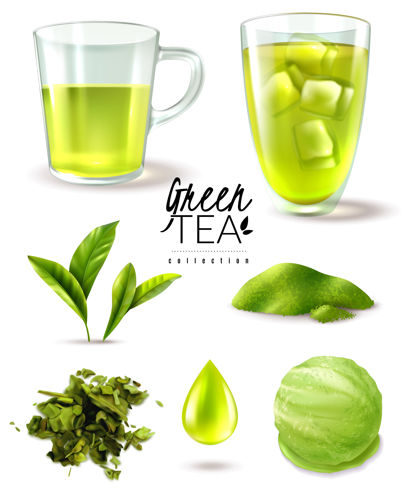
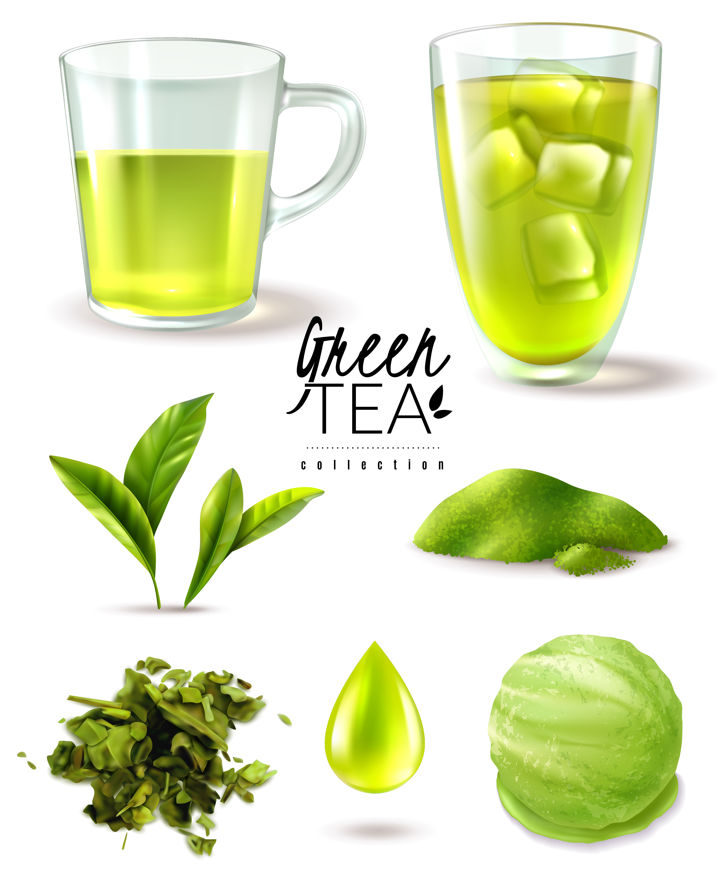

Lấy cảm hứng từ những lá trà xanh tinh khiết, sản phẩm "Giọt Xanh Tươi Mát, Nhẹ Nhàng An Nhiên" ra đời nhằm mang đến trải nghiệm trà tự nhiên, thanh mát và hoàn hảo cho người dùng. Được chế biến từ những búp trà tươi tốt nhất, "Giọt Xanh" không chỉ là một thức uống mà còn là món quà từ thiên nhiên giúp thanh lọc, thư giãn và nuôi dưỡng cơ thể từ bên trong.
Sản phẩm được làm từ những lá trà xanh tuyển chọn từ những vùng đất giàu dinh dưỡng, nơi mà khí hậu và thổ nhưỡng lý tưởng đã tạo nên những búp trà có màu xanh tươi mát và hương vị đậm đà. Quy trình thu hoạch và chế biến khép kín, giữ trọn hương thơm tự nhiên, đảm bảo từng giọt trà khi thưởng thức đều là tinh hoa của thiên nhiên.
 

"Giọt Xanh Tươi Mát" mang đến hương vị thanh khiết, nhẹ nhàng với hậu ngọt tự nhiên. Khi thưởng thức, bạn sẽ cảm nhận được sự tinh túy của thiên nhiên, giúp đầu óc thư giãn, giải tỏa căng thẳng và tạo cảm giác bình yên.
Với nhịp sống hiện đại, trà xanh chính là thức uống lý tưởng giúp tái tạo năng lượng. Sản phẩm "Giọt Xanh Tươi Mát" hướng đến một phong cách sống lành mạnh, an nhiên, giúp người dùng tận hưởng khoảnh khắc thư giãn giữa cuộc sống bận rộn.
Order tại đây
Previous : 🎉 Sinh Nhật HTM Coffee – Rộn Ràng Cùng Hàng Ngàn Deal Sốc! 🎉